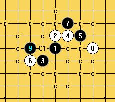

[学术讨论]小棋后焦头烂额了，不知道这2个10手怎么杀，求救
#1 [学术讨论]小棋后焦头烂额了，不知道这2个10手怎么杀，求救作者：岳麓小棋后 发表时间：2009-4-6 0:05:37
=======上图对应的爱五子棋谱代码如下，以便你拆解：========
h8i9g7h9j9f7i10k8g9g10
======================================================
后面有这个12，难搞！！！
=======上图对应的爱五子棋谱代码如下，以便你拆解：========
h8i9g7h9j9f7i10k8g9g10i8f8
======================================================
另外个10手
=======上图对应的爱五子棋谱代码如下，以便你拆解：========
h8i9g7h9j9f7i10k8g9f10
======================================================
［此帖子已被 茗弈小刀 在 2009-4-22 19:17:13 编辑过］
#2 Re:小棋后焦头烂额了，不知道这2个10手怎么杀，求救作者：岳麓小棋后 发表时间：2009-4-6 0:15:50
可以来个论坛战，大家往下下11哈#3 Re:小棋后焦头烂额了，不知道这2个10手怎么杀，求救作者：忧郁的双眼 发表时间：2009-4-6 0:23:52
=======上图对应的爱五子棋谱代码如下，以便你拆解：========
h8i9g7h9j9f7i10k8g9g10i8f8k10
======================================================
晕哦 小棋后。。。。
［ 无尽 于 2009-4-6 8:54:10 时奖励此帖[金币加 20 威望加1］
#4 Re:小棋后焦头烂额了，不知道这2个10手怎么杀，求救作者：失落刀 发表时间：2009-4-6 0:24:27
=======上图对应的爱五子棋谱代码如下，以便你拆解：========
h8i9g7h9j9f7i10k8g9f10k10
====================================================
参考
［ 茗弈小刀 于 2009-4-6 9:59:50 时惩罚此帖，发帖者[金币减20 威望减1］
［ 茗弈小刀 于 2009-4-6 22:04:28 时奖励此帖[金币加 20 威望加1］
［ 茗弈小刀 于 2009-4-6 22:04:56 时奖励此帖[金币加 20 威望加1］
#5 Re:小棋后焦头烂额了，不知道这2个10手怎么杀，求救作者：忧郁的双眼 发表时间：2009-4-6 0:24:47
=======上图对应的爱五子棋谱代码如下，以便你拆解：========
h8i9g7h9j9f7i10k8g9f10k10
======================================================
#6 Re:小棋后焦头烂额了，不知道这2个10手怎么杀，求救作者：忧郁的双眼 发表时间：2009-4-6 0:27:54
没看到花影教主的回复
抱歉抱歉
哈哈
小棋后
花教主的这个必杀了的
#7 Re:小棋后焦头烂额了，不知道这2个10手怎么杀，求救作者：岳麓小棋后 发表时间：2009-4-6 1:05:07
话说你们是怎么处理这里的？
=======上图对应的爱五子棋谱代码如下，以便你拆解：========
h8i9g7h9j9f7i10k8g9f10k10i8g10g11h10j10f8e7e9d10
======================================================
和这里
=======上图对应的爱五子棋谱代码如下，以便你拆解：========
h8i9g7h9j9f7i10k8g9g10i8f8k10h7j10l10j8j7f10e11
======================================================
#8 Re:小棋后焦头烂额了，不知道这2个10手怎么杀，求救作者：岳麓小棋后 发表时间：2009-4-6 1:13:36
杀了这个10手，这也太逗了吧，这么简单
=======上图对应的爱五子棋谱代码如下，以便你拆解：========
h8i9g7h9j9f7i10k8g9f10k10i8j10h10j8j7g10g11l9
======================================================
#9 Re:小棋后焦头烂额了，不知道这2个10手怎么杀，求救作者：岳麓小棋后 发表时间：2009-4-6 1:21:29
好的，这个10手也解决了，如下
=======上图对应的爱五子棋谱代码如下，以便你拆解：========
h8i9g7h9j9f7i10k8g9g10i8f8k10h7f10i7j11f5l11m12e11d12f6
======================================================
#10 Re:小棋后焦头烂额了，不知道这2个10手怎么杀，求救作者：岳麓小棋后 发表时间：2009-4-6 1:56:45
在这里感谢西毒和花教主，不懂的问题发到论坛上马上就有灵感了
#11 Re:小棋后焦头烂额了，不知道这2个10手怎么杀，求救作者：wd1988 发表时间：2009-4-6 18:08:56
我的是这个9
#12 Re:小棋后焦头烂额了，不知道这2个10手怎么杀，求救作者：岳麓小棋后 发表时间：2009-4-6 18:11:34
这个9手杀了，听东南兄说这个型的必胜9手不只一个哦#13 Re:小棋后焦头烂额了，不知道这2个10手怎么杀，求救作者：wd1988 发表时间：2009-4-6 18:13:50
我就是不知道你是想试试新点呢，还是不会杀这个9.所以没有贸然发谱。#14 Re:Re:小棋后焦头烂额了，不知道这2个10手怎么杀，求救作者：岳麓小棋后 发表时间：2009-4-6 18:14:25
刀姐姐怎么惩罚失落刀？？？
#15 Re:小棋后焦头烂额了，不知道这2个10手怎么杀，求救作者：wd1988 发表时间：2009-4-6 18:15:18
点错了吧。。。#16 Re:小棋后焦头烂额了，不知道这2个10手怎么杀，求救作者：岳麓小棋后 发表时间：2009-4-6 18:16:21
你的这个必胜9手的谱我没做完哦，要不要交换棋谱看看，哈哈
#17 Re:小棋后焦头烂额了，不知道这2个10手怎么杀，求救作者：冷面孤煞 发表时间：2009-4-6 18:29:04
老乡我有谱的哦，啊哈哈
#18 Re:小棋后焦头烂额了，不知道这2个10手怎么杀，求救作者：wd1988 发表时间：2009-4-6 19:16:02
小棋后，冷面发了谱给你的话说一声，我就不发了#19 Re:小棋后焦头烂额了，不知道这2个10手怎么杀，求救作者：wd1988 发表时间：2009-4-6 19:35:06
懒得等了，看这里：
#20 Re:小棋后焦头烂额了，不知道这2个10手怎么杀，求救作者：wrwak 发表时间：2009-4-6 21:18:22
说实话 LZ的这张头像比qq里背着包的好看多了
#21 Re:小棋后焦头烂额了，不知道这2个10手怎么杀，求救作者：茗弈小刀 发表时间：2009-4-6 22:07:02

 奖励点成惩罚了，不好意思！人老了，估计再过几年就会老年痴呆了，5555555555.
奖励点成惩罚了，不好意思！人老了，估计再过几年就会老年痴呆了，5555555555.